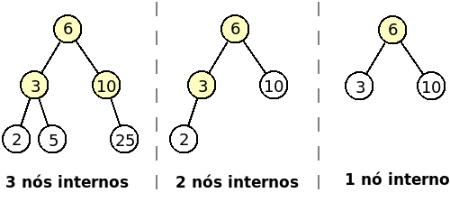
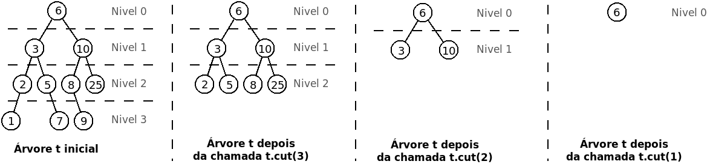
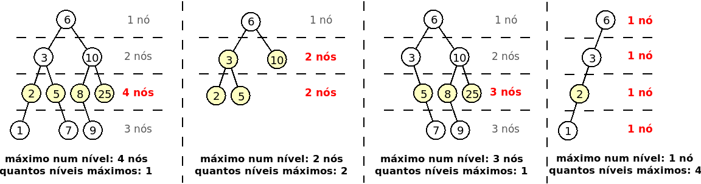

Neste problema deverá apenas submeter uma classe BTree<T> (e não um programa completo).
Código base
O código base são as classes de árvores binárias dadas nas aulas. Use como base a classe BTree<T>, que é a única que deverá submeter.
O problema
As árvores são das mais antigas criaturas da Terra dos Dados, conhecidas por serem defensoras das florestas e do mundo livre, combatendo ferozmente o cruel Senhor das Trevas e da Ineficiência. A espécie mais conhecida destas criaturas é a árvore binária, que precisa da tua ajuda para aumentar o seu poder com novos métodos.
Métodos a implementar
Deve acrescentar à classe BTree dada os seguintes métodos (não modificando nenhum dos métodos já existentes no código base):
- public int internal() (30% da cotação)
Deve devolver a quantidade de nós internos da árvore. Um nó interno da árvore é um nó com pelo menos um nó filho. Por exemplo, as árvores da figura seguinte têm respetivamente 3, 2 e 1 nós internos (indicados a amarelo).

- public void cut(int d) (30% da cotação)
Deve remover da árvore todos os nós com profundidade ≥d, mantendo os nós com profundidade <d. Note que se d≤0, a árvore deve ficar vazia (com root a ser null). A figura seguinte ilustra uma árvore t e o que seria o resultado de diferentes chamadas ao método cut.

- public int[] maxLevel() (40% da cotação)
Deve devolver um array [a,b] onde a é a quantidade máxima de nós num único nível de profundidade, e b é a quantidade de níveis com essa quantidade a de nós.. O array devolvido deve ter sempre tamanho 2 e é garantido que o seu método será sempre chamado com uma árvore não nula. A figura seguinte ilustra algumas árvores, a sua quantidade máxima de nós num único nível (nós a amarelo, quantidade a vermelho) e quantos níveis têm esse máximo.

Notas
- Pode submeter código com apenas alguns dos métodos implementados (para obter pontuação parcial).
- Pode implementar métodos auxiliares, se quiser.
- Para testar na sua máquina deve criar uma árvore. Pode ler uma árvore com número inteiros usando o método readIntTree da classe LibBTree (um exemplo foi dado nas aulas e está disponível na classe TestBTree).
- Em todos os casos de teste as árvores têm tamanho máximo de 100 nós, com a excepção do último caso de teste do método maxLevel (valendo 10% da cotação), onde a árvore pode ter 50 mil nós e 20 mil de altura, pelo que é esperado que a sua solução seja linear no número de nós da árvore para passar no tempo limite. Caso a sua função seja recursiva, para testar uma árvore com tantos níveis no seu computador, pode ter que aumentar o tamanho da stack do Java na execução (ex: java -Xss256M ED233 executaria o a classe ED233 com 256MB de stack). No Mooshak, a stack tem tamanho precisamente 256MB.
Exemplos de input e output para o método internal
Os 3 primeiros exemplos correspondem às três árvores da figura.
| Árvore t em preorder |
Valor devolvido por t.internal() |
| 6 3 2 N N 5 N N 10 N 25 N N |
3 |
| 6 3 2 N N N 10 N N |
2 |
| 6 3 N N 10 N N |
1 |
| 6 N N |
0 |
| N |
0 |
Exemplos de input e output para o método cut
A árvore em todos os exemplos corresponde à árvore da figura.
| Árvore t em preorder |
Chamada |
Estado da árvore depois da chamada, em preorder (com nulls) |
| 6 3 2 1 N N N 5 N 7 N N 10 8 N 9 N N 25 N N |
t.cut(3) |
6 3 2 N N 5 N N 10 8 N N 25 N N |
| 6 3 2 1 N N N 5 N 7 N N 10 8 N 9 N N 25 N N |
t.cut(2) |
6 3 N N 10 N N |
| 6 3 2 1 N N N 5 N 7 N N 10 8 N 9 N N 25 N N |
t.cut(1) |
6 N N |
| 6 3 2 1 N N N 5 N 7 N N 10 8 N 9 N N 25 N N |
t.cut(0) |
N |
| 6 3 2 1 N N N 5 N 7 N N 10 8 N 9 N N 25 N N |
t.cut(-1) |
N |
| 6 3 2 1 N N N 5 N 7 N N 10 8 N 9 N N 25 N N |
t.cut(42) |
6 3 2 1 N N N 5 N 7 N N 10 8 N 9 N N 25 N N |
Exemplos de input e output para o método maxLevel
Os 4 primeiros exemplos correspondem às quatro árvores da figura.
| Árvore t em preorder |
Array devolvido por t.maxLevel() |
| 6 3 2 1 N N N 5 N 7 N N 10 8 N 9 N N 25 N N |
[4,1] |
| 6 3 2 N N 5 N N 10 N N |
[2,2] |
| 6 3 N 5 N 7 N N 10 8 N 9 N N 25 N N |
[3,1] |
| 6 3 2 1 N N N N N |
[1,4] |
| 42 N N |
[1,1] |